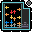

On the Subject of Terminology
“Optimization” (noun) - an act, process, or methodology of making something (such as a design, system, or decision) as fully perfect, functional, or effective as possible
| The process of growth or enlargement by a gradual buildup: such as an increase by external addition or accumulation (as by adhesion of external parts or particles) | |
| Actions or devices designed to negate or offset another | |
| Containing repetition | |
| In a coincidental manner; by coincidence | |
| Stealing stealthily in small amounts and often again and again | |
| A support for the arm | |
| The state or fact of being incompetent | |
| A substance that colors, dyes, or stains | |
| Something that corrects or counteracts | |
| One or more notes or tones preceding the first downbeat of a musical phrase; upbeat | |
| To build, fit, or alter according to individual specifications |  |
|
One who installs, maintains, operates, or repairs electrical equipment Arid land with usually sparse vegetation, especially such land having a very warm climate and receiving less than 25 centimeters (10 inches) of sporadic rainfall annually |
|
| An impervious material (such as a sheet of paper, thin wax, or woven fabric) perforated with lettering or a design through which a substance (such as ink, paint, or metallic powder) is forced onto a surface to be printed |